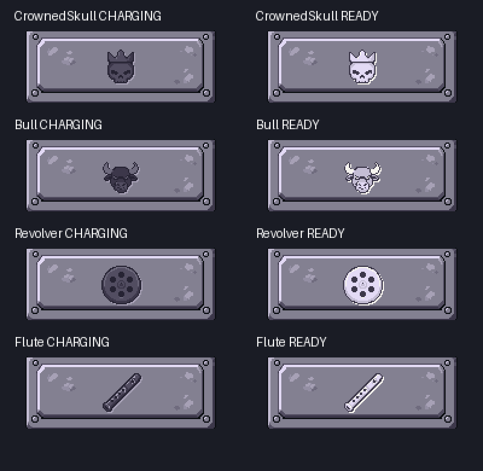
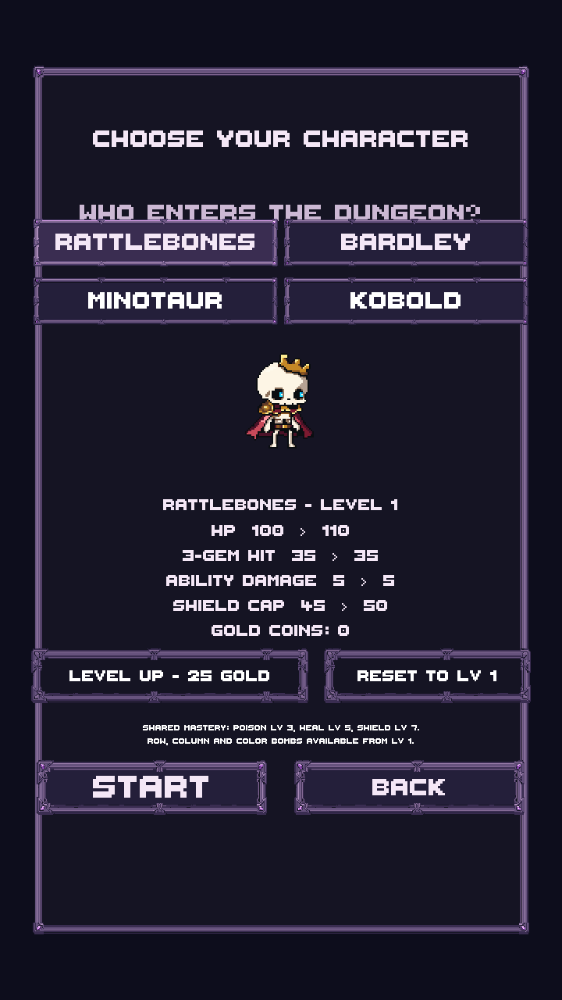

New PixelLab artwork, cleaned and saved through LibreSprite. The same solid stone plate carries four character engravings. Ready plates lift by whole pixels and glow white. Guide is removed from every zone; enemy tap inspection stays available. This branch is not merged.
95 PixelLab generations used; 4,683 remain. All 13 PNGs have binary alpha and exact LibreSprite round trips. PNGs below are exact captures; GIFs are palette-limited review encodings of actual Unity frames.

Choose a character. The left animation shows the ready cue. The right shows the actual ability for Kobold/Minotaur, or the ready glow for Rattlebones/Bardley.
Gideon is hidden from new selection. His assets, progression and existing saved continuation identity remain intact.
